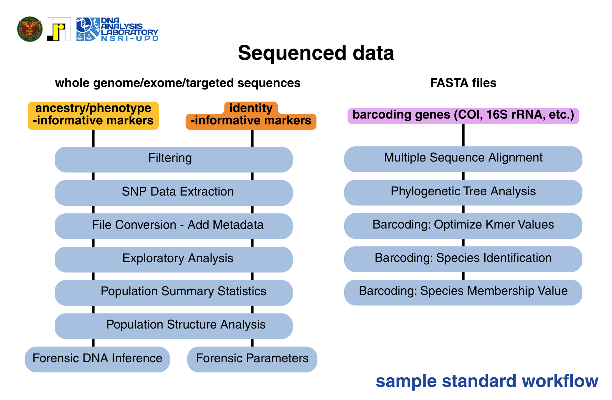

I Introduction
restful forensics is an open-source Windows-based platform for forensic genetics research workflow and method validation. This tool is built as a Shiny app in R and incorporates commonly used packages, functions, and software for genetic data preparation, pre-processing, and exploratory data analysis.
restful forensics is developed at the Natural Sciences Research Institute, University of the Philippines Diliman, Quezon City.
II Installation
Prerequisites
Dependency List
The package dependencies are listed in
R/packages.R and installed/loaded upon running
source("install.R")
Installation Guide
Clone the github repository by performing
git clone https://github.com/NSRI-DAL-2025-Project/restfulForensics.git
in the RStudio terminal. If using Windows command prompt terminal,
ensure that git is installed in the system. To install git, follow these
instructions.
After cloning the repository, download the dependencies by entering
source("install.R") within the console and run restful forensics
using shiny::runApp().
git clone https://github.com/NSRI-DAL-2025-Project/restfulForensics.git
source("install.R")
shiny::runApp()
III Features/Usage
This section dives into the modules and submodules of restful forensics. It describes the purpose of the submodule, links relevant supplementary files, and defines the expected input/output files as well as the parameters (if applicable.)
restful forensics is structured such that each submodule has its own tab detailing the instructions for use, sample format/s required as input or as a supplementary, and sample file/s.
1 File Conversion
1.1 Convert Files
This submodule converts genetic files to commonly parsed data structures, namely VCF and PLINK files. It also uniquely offers the conversion of a standard CSV to VCF with the upload of a supplementary file.
The maximum file size accepted is 5GB. It is recommended to split files with sizes larger than 5GB into multiple smaller files.

Input file: VCF, BCF, or PLINK (bed/bim/fam) files. Zipped VCF or BCF files are also accepted.
If converting a CSV file with sample, population, and genotype information to VCF, an additional file is required. The additional file should contain marker information with the following columns:
[1] rsID or marker name
[2] chromosome number (integer only, eg. '1' instead of 'chr1'
[3] base pair position, should match the build of the data (GRCh37 or GRCh38)
[4] genetic distance
[5] reference allele
[6] alternate allele
Expected output file: VCF or PLINK-associated files.
The tidypopgen R package is used for the CSV to VCF conversion while PLINK 2.0 is used for the rest.
1.2 Add Metadata
This submodule merges sample and genotype information with user-defined metadata columns. Population information is generally required for downstream analysis. Users can also merge other information, population- or sample-based, to serve as a larger database on hand.
The sample names in the input file should match the samples names in the metadata file for successful matching. If samples come from different populations, there is an additional option to calculate the number of individuals per pouplation.
Input file:
Genotype data in PLINK 1.9/2.0, VCF (or vcf.gz), BCF, CSV (genotype) file formats. Zipped VCF/BCF files are accepted.
Metadata of the samples
Expected output file/s: CSV file containing sample, metadata, and genotype information
CSV file containing sample, metadata, and genotype information
CSV file containing the number of samples per population (if samples belong to >1 population)
Text file containing the list of samples from the genotype file with no match in the metadata
For missing samples, double check if the sample IDs are the same for the genotype file and the metadata file.
1.3 Widen SNP calls
This submodule converts zipped .xlsx or .csv files containing long SNP data calls into a wide format. A single .xlsx/.csv file is expected to contain samples from a specific population where columns [1] contain sample ID, [2] marker ID or rsIDs, and [3] haplotype. Given diploid samples, two rows are expected for a single individual per SNP/marker.
Input file: Compressed file (.zip/.tar)
Expected output file: Single CSV file
1.4 To SNIPPER file
This submodule converts a genotype file with sample and two levels of population information (population and superpopulation) to a SNIPPER compatible file for individual classification using ancestry-informative markers.
The SNIPPER app suite is a web portal for classification of individuals into phenotypes and biogeographical ancestry. It is developed and hosted by Universidade de Santiago de Compostella and also has a built-in file generation option with SNIPPER 4.
Input file: CSV/XLSX file with sample identification and two levels of population assignment, eg. Philippines (country-specific assignment) and Southeast Asia (higher pop assignment). If input file only contains sample and genotype information, an additional file containing population metadata is required.
Expected output file: Excel (.xlsx) file compatible with SNIPPER 3.5 for ancestry-based individual classification
1.5 To STRUCTURE file
This submodule converts a genotype file with sample and population information to a standard STRUCTURE-compatible input file. The STRUCTURE software has label requirements that is internally handled during conversion by the app.
STRUCTURE is a free software used for investigating population structure using multi-locus genotype data (Stephen and Donnelly, 2000; Falush et al., 2003; Falush et al., 2007; Hubisz et al., 2009).
Input file: CSV/XLSX file with marker and population data
Parameters/Options: Choose between 'Linux' or 'Windows' since the format of the STRUCTURE input file depends on the operating system where the STRUCTURE software is installed
Expected output file: Structure (.str) file and the revised labels
There is also a dedicated module within restful forensics that runs STRUCTURE automatically using the CSV/XLSX file containing genotype and population data directly.
1.6 To Arlequin file
This submodule converts a genotype file with sample and population information to a standard Arlequin-compatible input file.
Arlequin is a free software package for population genetic analysis, calculating intra-population and inter-population metrics (Excoffier & Lischer, 2010).
Input file: CSV/XLSX file containing genotype and population information
Parameters:
(True/False) Genotypic/Haplotypic data
(True/False) Known Gametic Phase
(True/False) Co-dominant data
(Character) Symbol separating alleles. Default is '/'.
Expected output file: Arlequin (.arp) file
There is a dedicated module within restful forensics that runs the terminal version of Arlequin, Arlecore and uses the standard CSV/XLSX file with genotype and population data.
2 SNP Data Extraction
2.1 SNP Extraction
This submodule extracts markers by their reference SNP cluster ID (rsID) or base pair position from large genetic sequences generated using whole genome or next generation sequencing. The assumption is that only select markers or regions in a genetic sequence will be used for forensic analysis and should be subsetted prior.
restful forensics first validates whether rsIDs are present in the input file before proceeding with the extraction. If rsIDs are present in the file, users have the option to extract markers by either rsIDs or their GRCh37/38 base pair position. Otherwise, extraction can only be done using bp positions. If there are no rsIDs and markers are extracted using their bp position, there is an additional option for restful forensics to add rsIDs on the output file. All steps will be performed using PLINK 2.0.
Input file:
Data files (.vcf, .vcf.gz, .bcf, or plink files)
(If rsIDs are present) Marker names/rsIDs can be typed manually or uploaded as a .txt/.csv/.xlsx file
(If no rsIDs) A file with the following columns: [1] rsID/marker name, [2] chromosome number, and [3] base pair position
Expected output file: VCF file
The maximum file size accepted is 5GB. It is recommended to split files with sizes larger than 5GB into multiple smaller files or process on a per chromosome basis.
2.2 Concordance Analysis
This submodule performs concordance analysis between files or datasets with overlapping samples, usually profiles generated using different sequencing technologies. Performing a concordance analysis is a step towards validating the sequenced results.
Input file: Two files (.csv or .xlsx) with the same formatting and at least one column with similar contents (eg. sample IDs)
Parameter/Option: Phased genotypes. Check if TRUE. Markers will be directly compared and the order of alleles is considered during matching.
Expected outputs:
Concordance table (.xlsx file)
Concordance plot (.png file)
3 Filtering
This module filters individuals and variants using standard filtering options available in PLINK 2.0. If the input is a VCF file, there is an option to generate a depth of coverage plot using the vcfR R package.
Similar with the extraction tab, this module assumes that the input is a relatively large genetic sequence generated by whole genome or next generation technologies. To avoid including low quality data in the analysis that may skew the results, filtering or exclusion of individuals and/or variants should be performed. There are also assumptions in certain analysis methods that should be considered in finalizing the data. For example, there are methods that assumes loci are in Hardy-Weinberg equilibrium.
Input file: Data files (.vcf, .vcf.gz, .bcf, or plink files)
Standard Parameters:
'--mind' to filter individuals based on their missing genotype rate
'--geno' to filter variants based on their missing genotype rate
'--qual-threshold' to exclude variants below the quality score threshold
'--hwe' to exclude variants deviating from the hwe threshold
'--indep-pairwise' to prune variants in approx. linkage equilibrium
'--king-cutoff' to exclude a member of a pair with a certain level of inferred relationship
Expected outputs:
VCF file
Depth of Coverage plot (.png file)
4 Exploratory Analysis
This module performs exploratory analysis by running principal component analysis using the ade4 R package. This method extracts information and detects patterns based on the marker panel used.
Population information is required. The analysis will still be performed even when all samples
belong to the same population. To change the principal components on the x and y axis,
change the values on the "PC Axis X/Y" and click Run PCA Analysis.
Populations can be highlighted by ticking their associated checkboxes and can even be used as reference for
for the recalculation of the principal components.
Input file: CSV/XLSX file containing genotype and population information
Standard Parameters: If using custom colors and labels, a file (.csv/.xlsx) should be provided with the columns as follows: [1] population name, [2] color (name or hex code), and [3] shape. The principal component for the x-axis and y-axis can also be set.
Expected outputs: PCA plots (.png file)
5 Population Summary Statistics
5.1 R-based Calculations
This submodule calculates common population statistics using R-based packages. The included statistics are private alleles, mean allelic richness, heterozygosities, inbreeding coefficient, allele frequencies, and HWE and FST calculations. The R packages used are poppr, hierfstat, and adegenet.
Input file: CSV/XLSX file containing genotype and population information
Expected output file:
All resulting tables (.xlsx file)
PNG plots (heterozygosity and FST plots)
5.2 Arlecore
This submodule calculates common population statistics using Arlecore v3.5.2, the console version of the Arlequin software. There is only a fixed set of calculations in Arlecore included in this module: Diversity and HWE, expected heterozygosities, FST matrix, coancestry coefficient, and loci in linkage disequilibrium.
Input file: CSV/XLSX file containing genotype and population information
Parameter/Option: Check if to perform linkage disequilibrium test. Default is False.
Expected outputs:
Arlequin input file (.arp file)
All resulting tables (.xlsx file)
PNG plots (heterozygosity, FST matrix, and Coancestry coefficient matrix)
The zipped arlecore v3.5.2 package includes R functions for parsing sections from the resulting file. Select R functions were reused and adapted for compatibility with a more recent R version. The functions reused are coancestryCoeff.R, fStat_Pvalues_Func.R, pairFstMatrix.R, pairwiseDiffMatrix.R, sumExpectedHeterozygosity.R, sumNumAllelesFunction.R, and sumThetaHFunction.R. The mentioned scripts can be found within the R folder as helper functions.
6 Population Structure Analysis
6.1 Run STRUCTURE v2.3.4
This submodule analyzes genetic data and investigates population genetic structure using the STRUCTURE v2.3.4 software integrated in R by the strataG R package.
Input file: CSV/XLSX file containing genotype and population information
Parameter/Options: The adjustable parameters are limited and fixed to the standard K range, replicates per K, burn-in, and MCMC reps after burnin. Users can set whether to use admixture or no admixture model, set the alpha value, and use of the correlated frequencies model.
Expected output files:
Input (.str) file
Structure files
Zipped Q matrices
Individual (.ind) files
The STRUCTURE files, qmatrices, and/or indiv files can be used directly for other programs such as pong and CLUMPP. restful forensics also integrates the CLUMPP program under the Plot Structure tab.
6.2 Plot STRUCTURE results
This submodule directly accepts the structure result files as an uploaded zipped file or use the results from the Run Structure tab for plotting using the CLUMPP program.
Input file: Zipped file containing structure results or use generated output from Run Structure tab
Parameter/Option:
Target K value or the K value to be plotted
Algorithm to be used for aligning clusters
Pairwise matrix similarity statistic to be used
Order of runs to be tested. If 'all', test all possible input orders of runs while 'ran.order' tests only a specified number of random inputs
If using 'ran.order', the number of input orders of runs for testing should be specified.
Option to permute the clusters according to the cluster order.
Expected outputs: Structure plot (.png and .pdf files)
7 Forensic Parameters
This module calculates standard forensic parameters for individual identification using markers such as individual identity SNPs and are statistics which are commonly used for STR data. These are based on the standard guides for calculation and interpretations, but adjusted to be specific for SNPs as performed by Botstein et al (1980) and Kim et al. (2025).
Input file: CSV/XLSX file containing genotype and population information or an allele frequency table where the first column contains the marker and allele information (eg. rs101.A) while the succeeding columns are the frequencies per population.
Parameters/Options:
Use 5/2n rule in the calculation of genotype frequencies
Upload an individual's marker profile for identification
Expected output: Tabled results in an excel (.xlsx) file. The information per sheet is as follows:
Overall results with all markers and populations
Individual sheets containing the forensic parameters per population
Genotype frequencies of all populations
Individual sheets containing the genotype frequencies per population
restful forensics calculates these parameters for SNPs, but there are multiple tools and software specific for STR data.
Genotype frequency
If the input contains allele profiles per sample instead of genotype frequencies, restful forensics will then calculate genotype frequencies per population. It first evaluates whether the profile per marker are homozygous or heterozygous and sets the values of p and q. The genotype frequencies are then calculated where:
Homozygous: $p^2$ and/or $q^2$
Heterozygous: $2pq$
This calculation returns the genotype frequencies for each marker per population
Random Match Probability
The random match probability (RMP), also known as matching probability or probability of match, estimates the probability of observing two identical genotypes in a population. It is calculated by adding the squared frequencies per loci: $$RMP=\sum_{i}^n(P_{i})^2$$ or in plainer terms: $RMP=p^2 + 2pq + q^2$ for each loci.
Power of Discrimination
The power of discrimination (PD) is the probability that two random individuals will have different profiles given a set of loci. $$PD=1-PM$$
Polymorphism Information Content
The polymorphism information content (PIC) is the measure of a marker's ability to detect polymorphisms among individuals in a population (Serrote et al., 2020). The higher PIC value, the more effective the genetic marker is at discriminating between two unrelated individuals. This measure is calculated using: $$ PIC=1-\sum_{i=1}^n p_i^2 - \sum_{i=1}^{n-1}\sum_{j=i+1}^n 2p_i^2p_j^2 $$ where $p_i$ and $p_j$ are frequencies of alleles $i$ and $j$. This is interpreted as: $$PIC=1-(p^2+q^2) - 2*(p^2*q^2)$$
Power of Exclusion
The power of exclusion (PE) is the "fraction of individuals having a DNA profile that is different from that of a selected individual in a typical paternity case" (Huston, 1998) . $$ PE=h^2(1-2hH^2) $$ where $h$ is the proportion of heterozygous individuals, calculated using $h=2pq$, and $H$ of homozygous individuals, $H=p^2+q^2$.
Typical Paternity Index
The typical paternity index (TPI) is an odds ratio that estimates how likely an individual is the biological father compared to a random individual. $$ TPI=\frac{1}{2H}$$ where $H$ is the proportion of homozygous individuals, $H=p^2+q^2$.
8 Forensic DNA Inference
This module performs a NaÏve Bayes classification and leave-one-out cross-validation of individuals with SNP data (ancestry or phenotype-informative) using the e1071 and caret R packages. It can be used for rapid assessment of marker sets and training datasets. However, for a more comprehensive forensic DNA inference of an individual, it is recommended to use this submodule in conjunction with PCA, STRUCTURE, and SNIPPER.
Input file: CSV/XLSX file containing genotype and population information
Expected output: Tabled results in an excel (.xlsx) file
9 DNA Barcoding
9.1 Multiple Sequence Alignment
This submodule performs global multiple sequence alignment on DNA sequences using the msa R package.
Input file: Zipped FASTA files
Parameters: Option to use ClustalW, ClustalOmega, or MUSCLE
Expected output:
PDF of alignment
FASTA file of the alignment
The alignment is adjusted using the
DECIPHER R package
and are provided as an additional option for download. The output can also be used directly as input
for the Phylogenetic Tree Analysis tab.
9.2 Phylogenetic Tree Analysis
This submodule constructs a phylogenetic tree based on a multiple sequence alignment.
Input file: MSA file or MSA result from the MSA tab.
Parameters: The parameters required depend on the method chosen for tree construction.
Neighbor-Joining: substitution models, seed value, and outgroup (optional)
UPGMA: substitution models, seed value, and outgroup (optional)
Parsimony: seed value and outgroup (optional)
Maximum Likelihood: bootstrap value, seed value, and outgroup (optional)
Expected output file: Phylogenetic tree (.png file)
9.3 Barcoding
This section uses the BarcodingR R package for all the calculations.
9.3.1 Species Identification
This submodule performs species identification using protein-coding barcodes using different methods.
Input files: Aligned query and reference sequences (.msa, .fasta, .msf, .aln, .faa, .fas)
Parameters/Options: Method for training model and/or infer species membership
Expected output: Table of results
9.3.2 Optimize kmer values
This submodule calculates the optimal kmer length for maximal species identification success rate.
Input file: Aligned reference sequences (.msa, .fasta, .msf, .aln, .faa, .fas, .mase, .phylip)
Parameter/Option: Maximum Kmer value
Expected output: PNG plot
9.3.3 Calculate Barcoding Gap
This submodule calculates the DNA barcoding gap.
Input file: Aligned reference sequences (.msa, .fasta, .msf, .aln, .faa, .fas, .mase, .phylip)
Parameter/Option: Distance for the calculation of the gap
Expected output: A table of summary statistics of genetic distance
9.3.4 Evaluate Barcodes
This submodule evaluates two barcodes using the species identification success rate criteria.
Input file: Two DNA barcode sequences
Parameter/Option: Kmer length for barcodes 1 and 2
Expected output: Table listing the p values
9.3.5 Calculate Species Membership Value
This module calculates the TDR value for a set of query and reference species. TDR or Two-Dimensional Non-Parametric Resampling is a statistical method that evaluates uncertainties in multi-variable or structure datasets and is a robust method in assessing species membership (Jin et al., 2012) Values range from [0,1] where 0 indicates extremely weak species membership and values close to 1 indicate strong species membership.
Input files: DNA sequences from a single query species and set of reference samples
Parameter/Options: Bootstrap values for the query and reference samples
Expected output: Numeric value representing the TDR values for each query against the species
IV Workflows
The features in restful forensics are modularized and can be used independently or together following a certain workflow (Fig. 2).

restful forensics have been tested using data from the 1000 Genomes Project and Human Genome Diversity Project. Quality control was performed on the per chromosome VCF files using the filtering module before extracting markers using the SNP Data Extraction submodule. This process is represented in Fig. 3 with the dotted arrows indicating a two-way interaction. Extraction results were then zipped together for subsequent processing.

Population data were matched and merged with samples using the "Add Metadata" submodule. While the analysis modules within restful forensics require a genotype file with a single-level population assignment, the Add Metadata submodule provides the option to merge multiple columns/information (Fig. 4).

Following Fig. 2 and Fig. 3, the genotype file with population information is used as input for exploratory analysis (Fig. 5). Note that the module will not run without a population column.

For the calculation of population summary statistics, there is an option to use R-based packages or the terminal-version of Arlequin called Arlecore. For the example (Fig. 6), the arlecore submodule was used.

The same genotype and population file is used as input to run population structure analysis and directly visualized using CLUMPP (Fig. 7).

V Limitations
Known Limitations
| Module | Submodule | Limitation |
|---|---|---|
| File Conversion | To STRUCTURE File | No option to add extra information/columns. Parameters are set based on the strataG package. |
| File Conversion | To Arlequin File |
|
| Population Summary Statistics | Arlecore |
|
| Population Structure Analysis | Run STRUCTURE v2.3.4 | Same limited parameters as set in the strataG R package |
| Forensic Paramaters | Forensic Paramaters | Calculation of Random Match Probability given a profile is untested |
| DNA Barcoding | Multiple Sequence Alignment | Only global alignment can be performed |
Planned Enhancements
- File Conversion: To Structure File - Additional options to set in the main and extra parameter file
- DNA Barcoding - Add option to perform local sequence alignment
- Additional Feature - Incorporation of ADMIXTURE software